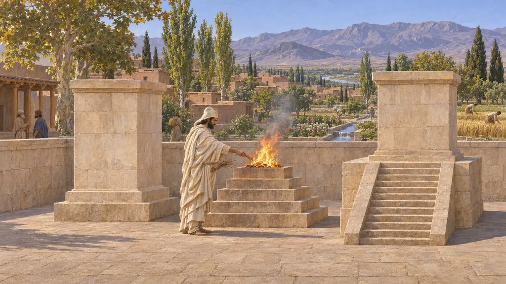
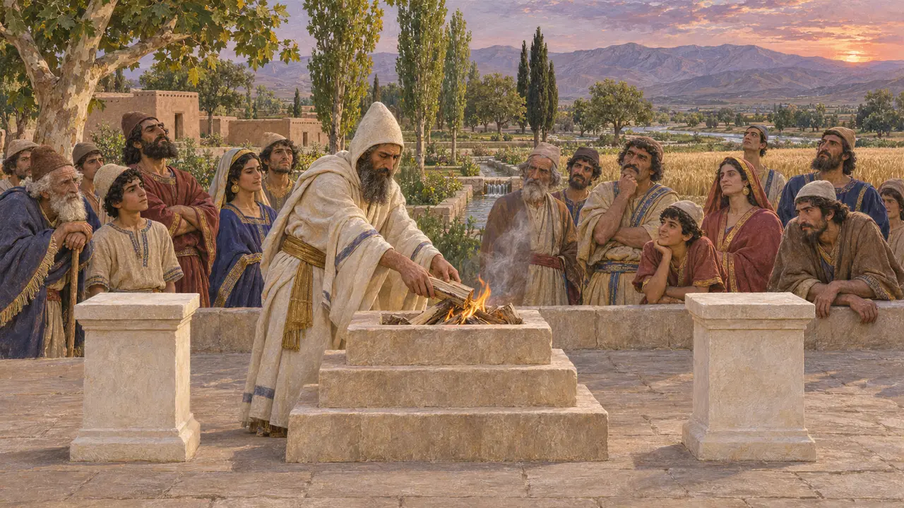
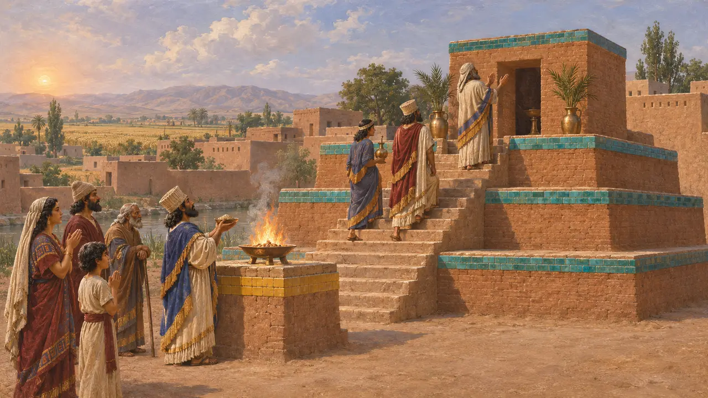

Il fuoco, gli altari e la questione dei templi
Che cosa bruciava, e dove
Il Re sta davanti a un altare acceso sopra la sua tomba a Naqsh-e Rostam. A Pasargade sorgono due basamenti di pietra. Che gli Achemenidi avessero templi del fuoco come l'Iran più tardo è molto meno sicuro, perciò il gioco non ne costruisce.
Nel gioco: L'Altare dei Magi e l'Altare del fuoco sono a cielo aperto. Lì si può celebrare il rito dell'accensione del fuoco. La sua forma è quella del gioco.

All'aperto
Nelle fontiIl rilievo della tomba di Dario lo mostra su una base a gradini davanti a un altare con una fiamma. Due basamenti di calcare sorgono nel recinto sacro di Pasargade, uno con una scala, e il loro uso è dedotto. Lo studio dei sigilli di Mark Garrison mostra quanto fossero varie queste immagini, e si chiede quanto sia sicuro perfino l'altare del fuoco della tomba.
Naqsh-e Rostam, tomb of Darius; Stronach 1978; Garrison 2017

Niente templi, dice Erodoto
Racconto anticoErodoto dice che i Persiani non erigono statue, templi o altari, e ritengono stolto chi lo fa. Salgono sui monti per sacrificare. È troppo netto: le tavolette nominano altari e offerte, e Dario dice di aver ricostruito santuari. Ma nulla nella sua Persia richiede un tetto sopra il fuoco.
Herodotus 1.131-132; Behistun, DB 14

La questione dei templi
ContesoGli zoroastriani più tardi custodiscono il fuoco nei templi, e autori classici li descrivono, alcuni in età partica. Edifici di pietra come la Ka'ba-ye Zardosht e il più antico Nush-i Jan sono stati chiamati templi del fuoco, e il nome è stato loro negato. L'Encyclopaedia Iranica avverte che le parole altare del fuoco e tempio del fuoco sono usate con leggerezza. Mary Boyce datava i fuochi dei templi agli ultimi Achemenidi.
Iranica, "Fire altars"; Boyce 1982

Le statue di Artaserse II
Racconto anticoBerosso, citato da Clemente Alessandrino, dice che Artaserse II fu il primo a erigere statue di Anahita a Babilonia, Susa ed Ecbatana. Questo è dopo il 405 a.C. Ecco perché Anahita non ha un santuario in questo gioco, il cui ultimo livello è nel 479 a.C.
Berossus in Clement, Protrepticus 5.65; A2Sa
Fonti
- Stronach 1978, Pasargadae
- Garrison 2017, The Ritual Landscape at Persepolis
- Boyce 1982
- Encyclopaedia Iranica, "Fire altars"